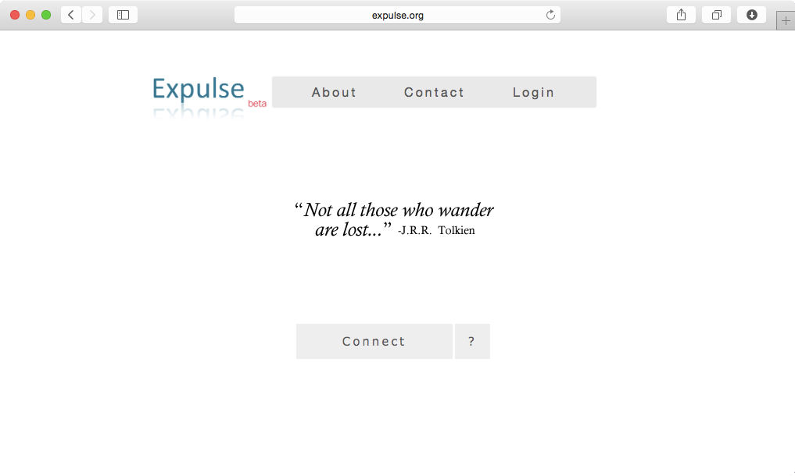
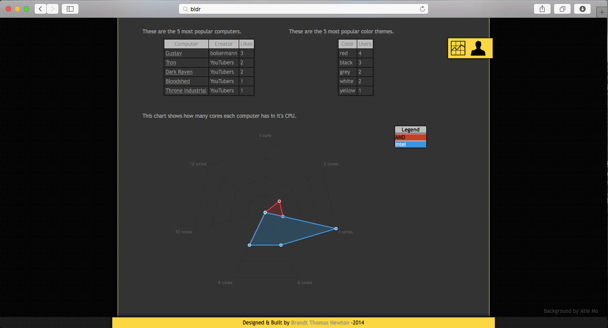
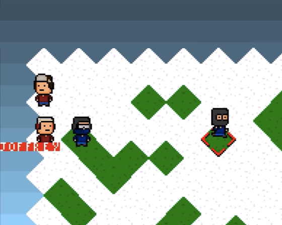
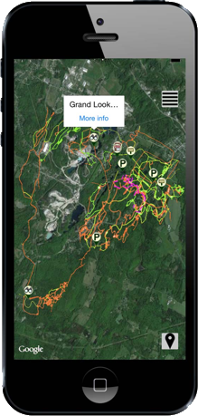
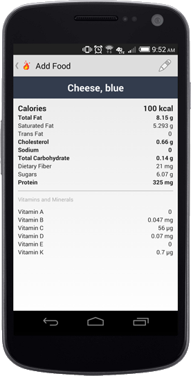
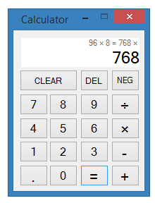
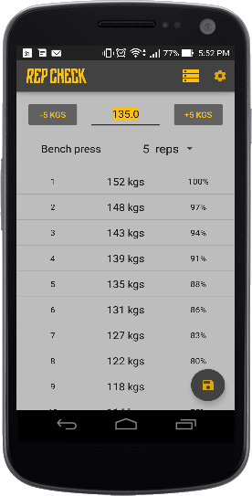

I enjoy exercising, motorcycling, problem solving, & learning.
Career
I am a senior at UVM and a Software Engineering intern at Mach7 Technologies. I am very meticulous and passionate; I require a high level of quality for every software that I touch. I started programming 2 years ago but I constantly work to develop my technical, design and communication skills outside of class.
Computer Science
I discovered programming and Computer Science 2 years ago during an introductory Matlab class that I part of my Mechanical Engineering program. I enjoyed the class and that summer I taught myself Java. Halfway through the following semester I switched my major to Computer Science (BS). The Computer Science program at UVM focuses on theory and problem solving so I set aside a minimum of 2 hours every day to learn new concepts and write or design high quality code.
Personal
I developed personal discipline in high school when I began lifting weights, as well as the habit of self education as I learned about nutrition and training techniques. I also discovered that I enjoy teaching others and have coached several friends. I have a patient, enthusiastic and supportive demeanor that seems to work well.
I also enjoy summer motorcycle trips with my father and uncle, sailing, Thai food, Vermont beer and cross country skiing.
Experiences
I took a gap year before college and spent 3 months in rural west Kenya living with host families while rebuilding an elementary school house and teaching high school physics and algebra. I then spent 2 months in the UK working on a small horse farm.
Languages
I consider myself very proficient in Java: I am currently a TA for a UVM Java class and I practice every day. Additionally, I am confident with C#, SQL (SQL, MySQL & SQLite), PHP, CSS and JavaScript. I also have experience with Git, and Python.
Bachelor of Science, Major in Computer Science BS(CS)
Minor in Mathematics
2012-2016
Saint Johnsbury Academy High School
Graduated 2011 with Honors
Work Experience
Technical & other jobs.
Mach7 TechnologiesSouth Burlington, Vermont
Software Engineer Intern
Summer, 2015
Redesigned an old Visual Basic app.
See portfolio.
Expulse.orgSaint Johnsbury, Vermont
Website Developer
Summer, 2014
Designed & built a website for secure support networking.
Independently learned MySQL, PHP, CSS, and web security.
See portfolio.
UVMBurlington, Vermont
Programming TA
Academic year, 2014-2015
Fall Semester: Intro to Programming-Python.
Spring Semester: Intermediate to Programming-Java.
Conducted programming labs.
Graded homework.
Emwiru Secondary SchoolEmwiru, Kenya
High School Teacher
October - December, 2011
Planned and taught physics & algebra lectures.
Ryegate Power StationEast Ryegate, Vermont
Grounds Keeper
Summer 2011 & 2013
Maintained campus lawns, trees, and ditches.
Cleaned and painted facility to meet safety standards.
WWOOF UKDevon, UK
Farm Hand
February - April, 2012
Cared for horses & ponies.
Helped maintain property.
Acquired an appreciation for UK pubs & beer.
Price ChopperSaint Johnsbury, Vermont
Shelve Stocker
Summer 2012
Stocked & rotated product.
Assisted customers.
Contact
bnewton149@gmail.com
Burlington, Vermont
Before proceeding...
Before proceeding to my GitHub page:
I have 5 projects in private repositories.
I have a 34 day streak of substantial commits.
Expulse.org
A private & secure support network.

Expulse.org allows a people who have been forced from a specific religious community to privately and securely connect with a support network. A vouching system allows the support network to add new users to the "inner-circle" which allows them access to additional features. Developed with PHP, MySQL and JS on an Apache Server. Tested by over 15 members of the target audience.
Tools & Technologies
HTML, PHP, MySQL, CSS, JavaScript, JQuery, and Google Analytics
Accomplishments
Self taught PHP, MySQL, & security
Secure user system with multiple permission levels
Private & anonymous messaging
Community vouching/moderation tool
Date: Summer 2014
Client: Paul Newton
Category: Website Design
Buildr
Compare your computer hardware

Buildr allows users to post the hardware and design specifications of their computer as well as a description and pictures. Users can view and comment on and like other's computers. Statistics on popular hardware, computers and designs are also available to help prospective system builders with design choices.
Won best in class: Intermediate Web Design at the 2014 UVM CS Fair Sponsored by Google
Snowball Game
2D Java Game

Less than half a year after completing my first programming course I submitted this game, which is still a work in progress, to the 2013 UVM CS Fair. I followed a tutorial series to get the initial framework down and then optimized it and added features.
The tutorial created a top down world that allowed the player to move a character around with the arrow keys. I modified the world rendering algorithms for an isometric camera view rather than orthographic. Tiles were randomly selected to be covered in snow. This involved a lot of changes and some optimization. Next I added characters and put the player in control of a cursor which could now move isometrically, one square at a time and select characters. Selecting a character would bring up an action menu. The action menu allowed the player to tell the selected character to move to a new tile. The character would efficiently navigate around other characters to the specified tile. Players could also change the direction that characters were facing.
Tools & Technologies
Java, FL Studio (SFX), and Paint.net (GFX)
Accomplishments
Won best in class: Java Programming at the 2013 UVM CS Fair Sponsored by Google
Barre Forest App
An iOS town forest guide.

This app was created in CS 275: Mobile Apps & Embedded Devices for the Barre town forest. It was designed to assist forest users in navigating the various walking and biking trails, historic sites and Frisbee golf course. We chose to use Google Maps and SQLite so our app could be more easily ported to Android. This was completed in one semester.
Tools & Technologies
Objective-C, SQLite, Python, and KML
Role & Responsibilities
Creating an SQLite database for trails and points of interest.
Converting all KML trail data and inserting it into the database.
Feature and interface design.
Accomplishments
All expected goals were met by the end of the semester and the stakeholder plans to launch the app.
Dietary Android App
A specialized dietary Android app.

This work in progress was inspired by interest in nutrition, event driven programming and the Android operating system. I also wanted to learn more about mobile app development than was taught in class. I am also teaching myself JUnit testing.
I do plan on releasing this app when it is finished.
Working Features
Multiple fragment based navigation & UI components.
Query USDA Food database with keywords for food items and nutrition facts.
Record consumed food, date, and time to local SQLite database.
View consumed food in chronological order or by frequency.
I am designing & creating every aspect of this app in my free time.
Code Design
An example of code design

In about 10 hours I began to learn the .NET Framework and produced a Windows Form calculator app. Check out the code here.
Features
Add, subtract, multiply and divide operations.
Clear, delete and negate transformations.
Record of all recent calculations.
Supports GUI & keyboard input.
MVC ish
I always design software with evolution in mind: one of my goals was to make adding new calculator types and functionality easy. I adapted the MVC design pattern to separate the code that all calculators share from the code that varies. Different calculator forms (view-controllers), such as standard or scientific, can be swapped out while the model remains the same.
Observer Pattern
The form implements 3 observer interfaces and registers itself with the calculator instance. The form observers state changes in the calculators answer, operation history and operand fields. I chose this configuration of observers to accommodate different form displays. This version has only 2 fields that display information so answers will temporarily replace the operand when updated.
partial class CalculatorForm : Form, AnswerObserver, HistoryObserver, OperandObserver
{
CalculatorInterface model;
public CalculatorForm(CalculatorInterface model)
{
...
// Register form with model
model.AnswerObserver = (AnswerObserver) this;
model.HistoryObserver = (HistoryObserver) this;
model.OperandObserver = (OperandObserver) this;
}
public void UpdateOperand()
{
// Update operand display
operandTextBox.Text = model.Operand;
}
public void UpdateHistory()
{
string history = model.History;
if (history.Length > 34)
{
history = "..." + history.Substring(history.Length - 28);
}
historyTextBox.Text = history;
}
public void UpdateAnswer()
{
// Overwrite operand display
operandTextBox.Text = model.CurrentValue;
}
...
}
The controller manipulates the model by changing the value of the operand with the PutDigit and ApplyTransformation methods. ApplyTransformation accepts objects that implements the Transformation interface. Transformations include delete, clear, and put decimal functions. New transformations can be easily created by implementing the Transformation interface and without changing the model.
Strategy Pattern
The Strategy Design pattern is used to define and change the action that the calculator will perform when the equals button is pressed. All operations implement the Operation interface and are used to perform operations between the current value and the operand fields. They are responsible for their own error handling as needed.
class AddOperation : Operation
{
public double Calculate(double operand1, double operand2)
{
return operand1 + operand2;
}
public override string ToString()
{
return "+";
}
}
The model will apply the current operation if the operand is not empty before setting the new operation and update the appropriate observers.
/* Applies the current operation and updates the calculation history.
*
* The operand is reset but only the history and answer observers are updated.
*/
public void Execute()
{
double operandValue;
bool operandConverted = double.TryParse(operand, NumberStyles.Float, CultureInfo.InvariantCulture, out operandValue);
if (operandConverted)
{
currentValue = operation.Calculate(currentValue, double.Parse(operand));
history += operation.ToString() + " " + operand + " ";
}
else
{
Console.WriteLine("Unable to convert {0}", operand);
}
InitializeOperand();
UpdateHistoryObserver();
UpdateAnswerObserver();
}
This work in progress was inspired by interest in nutrition, event driven programming and the Android operating system. I also wanted to learn more about mobile app development than was taught in class. I am also teaching myself JUnit testing.
I do plan on releasing this app when it is finished.
Working Features
Multiple fragment based navigation & UI components.
Query USDA Food database with keywords for food items and nutrition facts.
Record consumed food, date, and time to local SQLite database.
View consumed food in chronological order or by frequency.
I am designing & creating every aspect of this app in my free time.
Rep Check
A Powerful One Rep Max Calculator

While this project was only meant to be a trial run for publishing an app to Google Play, it turned into a nice little app. The interface supports an efficient workflow and encourages users to only track their primary exercises to keep sessions short but frequent.